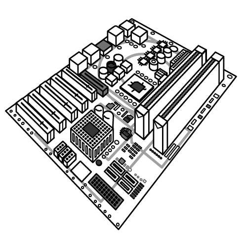
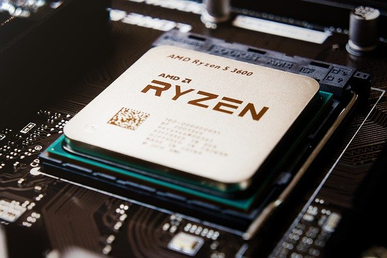
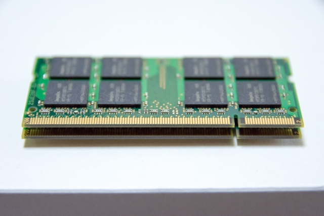
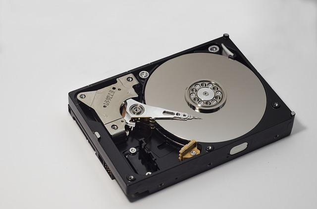
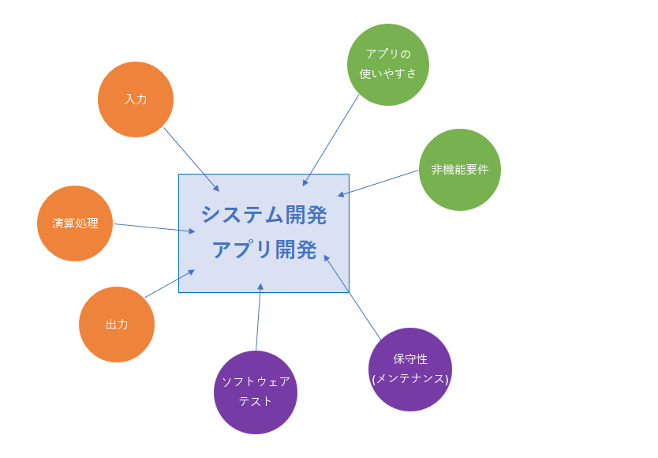

前回の記事でプログラミングは効率の良い演算が出来るように意識したり、「データ」として多くの情報をコンピュータに伝える必要があると解説しました。
そこで今後プログラミングを実際に始め、作成したプログラムがコンピュータのどこでどういった風に処理されているのか、その特徴を知っておく必要があるでしょう。
今回の記事では、ハードウェアの観点からコンピュータについて詳しく探っていき、プログラムコードがどこでどう影響するのかを解説していこうと思います。
パソコンの構造を知る
ハードウェア / ソフトウェア
これは知っている方も多いかと思いますが、改めて確認しておきましょう。
ハードウェアとは、基本的に物質的に存在するものの総称です。パソコン本体はもといモニターとかキーボードとかがそうです。
一方のソフトウェアは物理的に見えないいわゆるデジタルデータとして存在するものの総称です。ExcelやWord、メモ帳など(いわゆるアプリケーション)がそうです。
またこれ以外に「ミドルウェア」という単語もありますが、ここでは詳しくは説明しないので詳細を知りたい方は こちら から調べてみて下さい。
色んなハードウェア
ノートパソコンを使用している方々にとっては、実際にハードウェアとして見えているものはモニターとキーボードが一体化したパソコン本体とマウスくらいかと思います。
勿論これらは全てハードウェアです。
一方デスクトップパソコンを使われている方は、モニターとパソコン本体が分かれていますよね。
更にパソコン本体にキーボード、マウスが繋がっているかと思います。はたまた、スピーカーや、プリンター、複数台のモニターなどが繋がっている方もいらっしゃるかと思います。
またSDカードスロットやUSB端子が数多くついていて、そこから周辺機器を追加でつなげられるようになっていると思います。
それらは全て同じコンピュータですが、それらは全て一つのある機器に繋がっていますよね。そう、パソコン本体です。
(ワイヤレス接続しているインターネット無線LANルーターなどは分かりにくいですが)
ではこのパソコン本体にはどんな部品が詰まっているのでしょうか。
マザーボード
|  |
デスクトップパソコンの本体などに入っているやつです。
これに色んな制御チップや機器、媒体を接続してパソコンを動かします。接続する主なハードウェアはハードディスク、CPU、電源装置、グラフィックボードなどがなります。
昔の家庭用ゲーム機(スーパーファミコンなど)はカセットロムスロットなどがあって知っている方も多いかと思いますが、上のイラストを見ると何かを突き刺せそうなスロットがありますよね。
CPU
|  |
CPUはパソコンの頭脳とも呼べる装置で、中央演算処理装置と呼ばれます。Central Processing Unitの略。
現代のコンピュータはこのような集積回路(IC)や大規模IC(LSI)などにより高度な知能を持った偉大な存在にまでなりました。
小さなLED照明からロケット、軍事兵器に至るまで機械と呼べるものにはほぼ全て搭載されていて、CPUなしに現代世界は存在しないと言っても過言ではないでしょう。
パソコンのカタログやお店に陳列するパソコンコーナーで「intel Corei7」や「4コア8スレッド」などの名前を見た事もある方も多いのではないでしょうか。
これらはCPUの名前や製品名、スペックを意味する単語になります。
メモリ
|  |
主記憶装置と呼ばれます。
この装置が内部で計算を行う際にデータを取り扱う場所になります。この場所は業界ではアドレスと呼ばれメモリのアドレスなので「メモリアドレス」と呼ばれます。
CPUが計算処理自体を行う装置なのに対し、計算する値や結果を保持する記憶装置がメモリという事になります。パソコンではそういった役割分担がなされて構成されている事になります。
またメモリはRAM(Random Access Memory)とも呼ばれ、装置内を自由にアクセスできる事からそう呼ばれます。
プログラミングにおいてメモリ番地の何番に何を置いて、計算した結果を何番に置くといった形でプログラミング自体にも大きく関係してくる装置になります。
スマートフォンなどでも「メモリ4GB搭載」などの広告を見た事ある方もいらっしゃるのではないかと思います。
ハードディスク
|  |
補助記憶装置、HDDなどとも呼ばれるものです。これは皆さんご存じでしょう(知らない人いたらごめん^^;)
パソコンが起動している間、CPUやメモリが頑張って働いてくれるお陰で我々は様々な情報をパソコン上で利用する事ができます。
しかしその情報はパソコンのプログラムを終了すると同時に消えてしまうため、パソコンに保存したい写真や音楽データなどはハードディスクに記録する事になります。
ハードディスクのような静的保存領域を利用する事で、予め作成したデジタルデータを保存する事ができます。
2010年あたりからハードディスクのようにデータを保存でき、更にアクセス速度が向上したSSDが登場しています。
SSDは従来のHDDに比べファイルの保存時間が倍以上早くなった記録媒体です。
また他にはCD-RやDVD-Rなどの光ディスクに代表されるメディア媒体も補助記憶装置と同じ特徴を持っていて、昔はカセットテープのような媒体にもデータを記録していました。
デスクトップパソコンの場合は他にもCPUの温度を下げるスポットクーラーや、画像処理用のコントローラメモリ、サウンドメモリやテレビのチューナーなどもパソコン本体にセットされる事があります。
データの定義
それではパソコンのハードについて知ったところで「データ」について解説していきます。
パソコンを使う我々はアウトプットされているウインドウアプリケーション、画像、動画などが見えていて、キーボードとマウスを駆使してパソコンに指示を出しています。
これらの内容は全てデータであり、コンピュータの中では数値として扱われます。
例えば動画投稿サイト「YouTube」の画面においては動画だけではなく、動画タイトルなどのテキスト情報、再生回数、投稿日、いいね・SNSシェアボタンなども全部「データ」です。
プログラミングではこれらの情報も全てデータとして定義する必要があります。
たとえそれが面倒でもです。
前回お話した通りパソコンには実現したい事を0から10まで全て指示する必要があります。
ここでは前回の太郎さんと花子さんの話を出してもいいのですが、分かりやすいようにシンプルな例で解説します。
例えばあなたがある企業の事務職員であったとします。
ある日、上司の佐藤さんから電子メールが送られてきます。その後、佐藤さんがやってきてあなたにこう言いました。
「さっき送ったファイルなんだけど、全部csv(※)でさ。これ全部指定のフォーマットに当てはめて文書管理システムに上げといて(登録しておいて)くれる？」
csvとは何ですか？ |
|||
|
csvとはあるカンマ ( , ) の文字で区切られた複数のデータが含まれるファイルフォーマットの事です。
|
さて、あなたは困った事にこのフォーマットに全て手打ちで入力しようと考えています。そんな暢気な事してる場合じゃないでしょ、と遠目で部長が怪訝な顔をしています。アラマーコワーイ( ^ω^)
そこで以下のようなプログラムを作る事にしました。
- 所定のファイルを登録すると、自動的にそのデータを読み取って指定のフォーマットファイルに書き込み、保存する機能を持ったアプリケーション
若干味気の無いプログラムに見えますがとりあえず作っていきましょう。
- 所定のファイルを受け取る「受付部分」を作る
- 受け取ったファイルの中身を読み取る
- 読み取ったファイルの中身を分解して、指定のフォーマットファイルに貼り付ける
- ファイルを保存する
いわゆるこれが業界で言うところの「設計」に当たります。
さて、上記のプログラム実装内容にはある特徴があります。それは入力、処理(計算)、出力という大きな要素がある事に気が付きます。
・所定のファイルを受け取る「受付部分」を作る 入力
・受け取ったファイルの中身を読み取る 処理(計算)
・読み取ったファイルの中身を分解して、指定のフォーマットファイルに貼り付ける 処理(計算)
・ファイルを保存する 出力
一般的にシステムは上記の仕組みを使って成り立っている事が多いです。
処理に必要なインプットデータがあり、データの計算処理を行い、アウトプットとして結果を返す、これがプログラムの基本概念となります。
例えば我々が使っているもので考えてみましょう。
テレビ |
テレビは、光ファイバーや電線を伝って、周波数の信号がアンテナに伝わります。これがテレビ番組を受信する部分で「入力」に該当しますね。
受信した信号は電話回線を伝って、テレビに送り込まれテレビの中で映像に変換されます。この中では色んな処理が行われていますので、これが「処理(計算)」になります。
画面に内容を映し出すのが「出力」です。
パソコン |
パソコンは、キーボードからタイプした文字や、YouTubeなどの動画サイトから受信したデータが「入力」です。
その受信したデータをパソコン内部でハードウェアが処理を行い、アプリケーションなどが処理を制御します。これが「処理(計算)」になります。
画面に映し出された内容が「出力」です。
飛行機 |
では飛行機ではどうでしょうか？
飛行機は空を飛ぶ乗り物(機械？と言っていいのか微妙ですが^^;)ですが、これも入力、処理(計算)、出力の観点で考えてみましょう。
飛行機の動力源は、エンジンです。専用の燃料によって巨大なプロペラが回転し、その力で前に進む仕組みになっています(工学なので割愛します)。
「入力」は燃料になります。「処理(計算)」はエンジンの稼働という事になり、「出力」は浮力というところでしょうか。
皆さんとは少し内容が異なった見解かもしれませんが、考え方として認知できる内容だと思います。
（色々な考え方でも納得いく答えであれば大丈夫です。世の中、答えは必ずしも1つだけとは限りません）
・・・すいません。なんか段々「データ」の話から脱線してきちゃいましたね^^; さすがにこの辺りで解説していきましょう。
「データ」の説明ははっきりした答えがなく、若干曖昧な表現が含まれる事があります。
なので、データについて正確に理解しようとするのではなく、データとは 内容の意味を含むもの として納得するようにしましょう。
先ほど作成するといったプログラムで言うと、「所定のファイルを受け取る「受付部分」を作る」がまずありましたが、この中におけるデータに成り得る部分を抜き取ってみます。
- 受け取ったファイル
- 受け取ったファイルの種類
- 入力媒体を受け取ったかどうかの事実
- 受け取るための処理(ファイルを選択するための画面など)
内容としてはよく分からない部分も多いかもしれません。
「入力媒体を受け取ったかどうかの事実・・・？え？そんな情報どこに書いてあるんだ？」と思うと思います。最初はそうなって当然なので安心して下さい。
コンピュータにとってはこれが必要最小限の情報となります。
例えば、上記のプログラムを起動したが、取り込むはずのインプットファイルを手元に用意していなかった(事に気づいた)時、処理を中断する可能性を考えなければいけません。
そうなった時、処理が一方通行的に行われるようにしか設計されていない場合どうなるでしょうか…？
インプットとなるファイルがないまま、プログラムが進行を続け、最悪暴走してしまう可能性は否めません。
例えばあなたが牛丼を食べたいと思い吉野家へ外食に行くとします。しかしお店に到着すると席が全て埋まっていて、お腹が空いていてどうしようもない時どうしますか？
人間ならそこで臨機応変にお店を変える事などができますがロボットはそうはいきません。そのまま待つか、対策がなくバッテリー切れで止まってしまう可能性があります。
それを判断するために上記の「入力媒体を受け取ったかどうかの事実」のような、想定しない事が発生するケースはデータとして考えておく必要があるのです。
またここで一部誤解を招く表現があるかもしれません。上記の対応はプログラム構造で回避できデータとして持つべきではない、とする思考がベターですが、脈略上起用しました。
これはシステムの制御を考える上で必ず重要になってくる情報です。この概念は最初は分からないかもしれません。私も最初は分かりませんでした。
しかしやがてその意味が分かる時は必ずやってきます。むしろ、そういった思考なしにちゃんとしたシステムは作れない、と思うようになります。なので今はそうなるように努力するだけでいいです。
安心してください。そんな重要な情報は知らないうちに勝手に意識するようになるものです。
そうなるために今ここで原理を学んでおく必要があるのです。
データの流れ
プログラミングは目的を達するためにデータの流れを把握してプロセスを構築する思考が不可欠です。
それは別の視点から言うと、目的に対する考察と論理的思考力が必要であり、アルゴリズム(仕組み)を理解する事が不可欠であるという事になります。
これは前回の記事でお話した通りです。
ではデータが実際どのように動いて最終的にどうなっているのかを見てみます。
さきほどの例で説明していきます。
 |
- 所定のファイルを受け取る「受付部分」を作る
- 受け取ったファイルの中身を読み取る
- 読み取ったファイルの中身を分解して、指定のフォーマットファイルに貼り付ける
- ファイルを保存する
上記のプログラムで最も重要な要素のデータはファイルの中身である内容でしょう。
それは最終的に得たい情報がインプットデータの内容だからです。
プログラミングではコーディングする内容が決まっていないとプログラムを作る事はできません。(設計も兼ねてプログラムを組んでいる方々もいます)
そこで先にプログラムの内容を概要レベル(設計)で作成するのが通常望ましいと考えます。
概略を考えるきっかけはセオリーはありません。人によって固定概念や思考の使い方は異なっているので、考えやすいように作って構わないと思います。
今回の場合例えば、csvファイルというインプットデータを最終的に規定フォーマットのファイルに追記する事までのデータの変遷を追っていく事でその設計を行う手法が考えられます。
これを「入力」→「処理(計算)」→「出力」に当てはめて考えます。
すると、
・入力はcsvファイルのみを受け付けるようにする
・処理はcsvファイルを読みだして必要な箇所のデータをメモリに保持(※)する
・出力は規定フォーマットの形で指定場所にファイルで保存する
というシナリオが出てきます。
・・・おっと、上記に「規定フォーマットに取得したデータを埋め込む」がありませんでしたね。
これも追加しましょう。
データを保持する場所 |
|
|
データを保持する場所は「メインメモリ」になります。主記憶装置です。 |
入力、処理、出力はそれぞれ分類として同じような立ち位置にいるかもしれませんが、処理の数・比重は同じではありません。
例えば出力フォーマットが複数あったり、データベースなどの外部システムに登録するなどの機能仕様の変更も考えられます。
アプリを一つ作るにしても、規模の良し悪しもありますが、考えないといけない事がたくさんあるのです。
|  |
私個人的に今でも難しいと感じるのは、やはり設計に絡む部分です。
内容によっては簡単になったり難しくなったりするのが設計作業で、電卓1つ作るにしても設計は難しいです。
何が難しいかと言うと、客観的に物事を見る事が大変だと思います。
しかしこればかりは場数を踏むしか技術向上の手段はありませんし、最初から出来る人はまずいないでしょう。
そう考えると人を乗せて走る新幹線や船、人の命を守る役割の医療機器などのシステムは相当な難易度でしょうね。
システム開発と単に言っても、その幅はものすごく広く、IT革命時代と言われる現代において、こういったシステムがいかに重要な立場にあるかを認識する必要があると思います。
話が脱線してしまいましたが、「データ」とはプログラムを作る上で柱となる要素であると言う事です。
どちらかと言うと、プログラミングを始める前に行う事に近いですね。
この設計作業で如何に明白な方向性を示す事ができるかどうかでプログラミング自体の難易度も大きく変わってきます。
「データ」の存在意義はそれほど重要なものなのです。